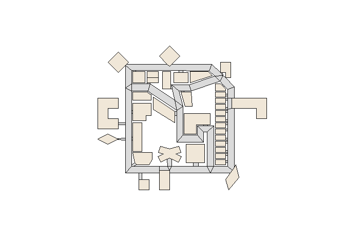
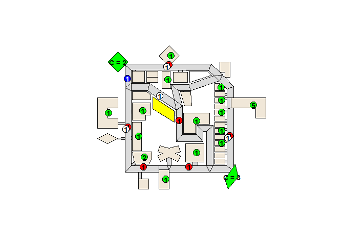

Installation
You can install the development version of rrstools using the following methods:
Using install.packages() (R-universe)
# Enable the R-universe
options(repos = c(
nononoexe = "https://nononoexe.r-universe.dev",
cran = "https://cloud.r-project.org"
))
# Install the package
install.packages("rrstools")Using pak
# install.packages("pak")
pak::pak("nononoexe/rrstools")Usage
This package provides functions to read and plot RRS map data.
library(rrstools)
# Sample GML file
gml <- system.file("extdata", "map-test.gml", package = "rrstools")
# Read the map data from the GML file
map <- read_rrs_map(gml)
# Print the map data
map
#> RoboCupRescue Simulation map object
#> Number of elements: nodes: 315 edges: 413 faces: 95
#> Bounding box: xmin: -30.000000 ymin: -20.000000 xmax: 135.000000 ymax: 121.000000
# Plot the map data
plot(map)
It is possible to overlay scenario data on the map.
# Sample scenario file
xml <- system.file("extdata", "scenario-test.xml", package = "rrstools")
# Read the scenario data from the XML file
scenario <- read_rrs_scenario(xml)
# Print the scenario data
scenario
#> RoboCupRescue Simulation scenario object
#> Number of entities: 35
#> Entities by type:
#> Type Count
#> ambulancecentre 1
#> ambulanceteam 4
#> civilian 20
#> firebrigade 6
#> firestation 1
#> policeforce 1
#> refuge 2
# Plot the map with the scenario data
plot(map, scenario)
Code of conduct
Please note that this project is released with a Contributor Code of Conduct. By participating in this project you agree to abide by its terms.